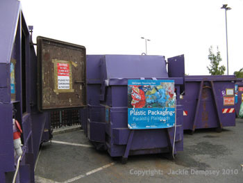
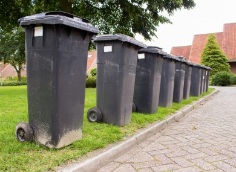

If you cannot re-use items, the next best thing is to recycle them. Most recycling centres will accept newspapers, cardboard, cans, glass, clothes and bedding, etc. The larger centres will take electrical and electronic items such as washing machines, fridges, computers, etc. A few take garden waste and even metal, wood and old furniture.
How Sweden turns Waste into Gold
A lot of dinner leftovers can be made into other dishes.Some simple ideas are:
- Leftover mashed potatoes can be made into potatoe cakes
- whole cooked potatoes can be fried or used to make Bombay potatoes
- Cooked rice can be used to make egg/chiken/vegetable fried rice
- Cooked veg could be used as part of a stir-fry dish
- Bananas that are over-ripe can easily be transformed into banana bread
- Stale bread can be used to make a delicious bread-and butter putting



Recycling centers, composting or local banks all play a role
Most kitchen and garden waste can be composted. The list below shows what NOT to put in your compost heap.
- Meat - will attract vermin
- Cooked food - will attract vermin
- Potato peelings - you'll have potato plants popping up wherever you spread your compost
- Diseased plants/leaves
- Woody material unless it is shredded
- Pernicious weeds, e.g. dandelion, creeping buttercup, dock, etc.
- Weeds that have gone to seed, unless you can guarantee very high temperatures in your heap
- that will break down the seeds and prevent germination
Athlone Civic Amenity Site
Adress: Golden Island, Golden Island (kilmaine), Athlone, Co.Westmeath
Hours:
- Monday 9a.m.-5pm
- Tuesday 9a.m.-5pm
- Wednesday 9a.m.-5pm
- Tuesday 9a.m.-5pm
- Friday 9a.m.-5pm
- Saturday 9a.m.-5pm
- Sunday 9a.m.-5pm
Phone:(090) 6477397